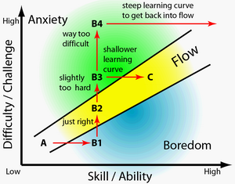

-
=======
-

week one reflections
... Csikszentmihalyi’s Flow and the clear steps to take to achieve happiness and efficiency
read more... -

tracking changes reflection
... Commit early and often
read more... -
my website reflection
What do you think about Open Source? Does it make you nervous or protective? Does it feel like utopia?
read more...
@ndrew ©rowley
-
>>>>>>> master